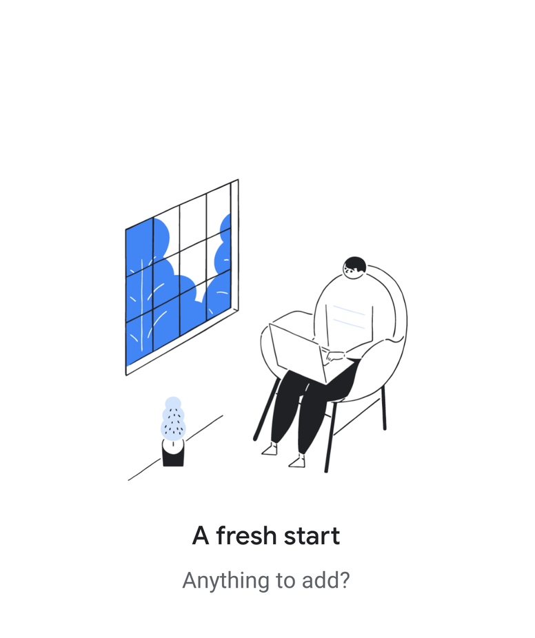

<ion-header>
  <ion-navbar color="burple">
    <ion-title *ngIf="!isSearchbarOpened">
      {{categoryName}}
    </ion-title>
    <ion-searchbar *ngIf="isSearchbarOpened" showCancelButton="true" (ionInput)="getItems($event)" (ionCancel)="isSearchbarOpened = false"></ion-searchbar>
    <ion-buttons end>
    </ion-buttons>
    <ion-buttons end>
      <button ion-button icon-only *ngIf="!isSearchbarOpened" (click)="isSearchbarOpened = true">
        <ion-icon name="search"></ion-icon>
      </button>
    </ion-buttons>
  </ion-navbar>
</ion-header>

<ion-content padding>
  <ion-list class="login-sliding-demo">
    <div class="outerDiv" *ngIf="categoryItems?.length == 0">

      <div id="empty" class="emptyCategory" *ngIf="categoryItems?.length == 0 && !isSearchbarOpened">
        
      </div>
    </div>
    <ion-item-sliding *ngFor="let item of categoryItems;">
      <ion-item (click)="goToTaskDetail(item, item.id)">
        <p>Title:
          <strong>{{item?.taskTitle}}</strong>
        </p>
        <p>Description:
          <strong>{{item?.taskDescription}}</strong>
        </p>
      </ion-item>
      <ion-item-options side="left">
        <button ion-button color="danger" (click)="delete(item.id, item)">
          <ion-icon name="trash"></ion-icon>
          Delete
        </button>
      </ion-item-options>
      <ion-item-options side="right">
        <button ion-button color="secondary" (click)="addToCompletedTasks(item)">
          <ion-icon name="checkmark"></ion-icon>
          Complete
        </button>
      </ion-item-options>
    </ion-item-sliding>
  </ion-list>
  <ion-fab right bottom>
    <button ion-fab class="addButton" (click)="createTaskInCategory()" color="burple">
      <ion-icon name="add"></ion-icon>
    </button>
  </ion-fab>
</ion-content>